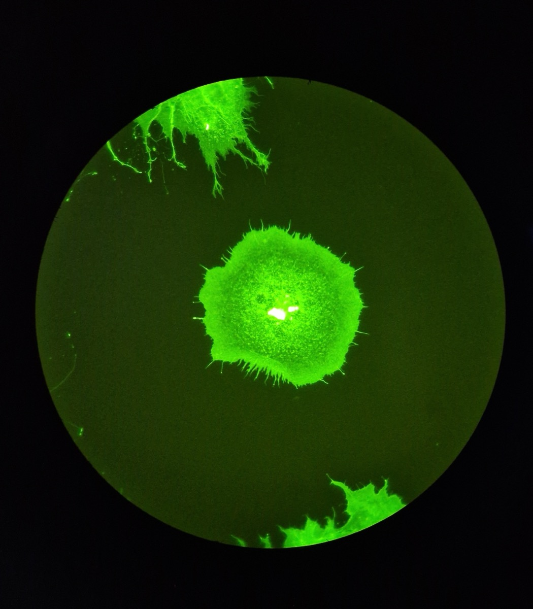
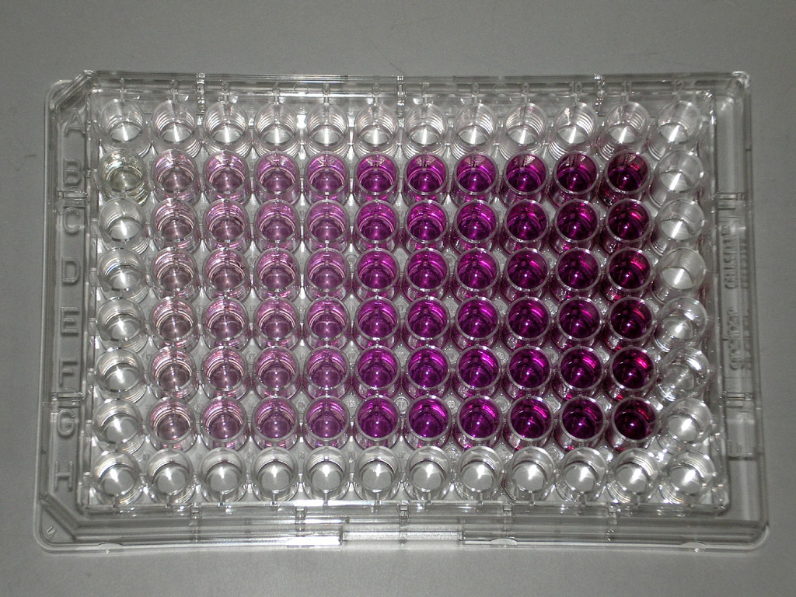

Executive Summary
The size of a public dataset often reads as an asset in itself. JUMP-lite, posted to arXiv on August 7, 2026 by the Carpenter and Singh labs at the Broad Institute, tests that assumption. The authors picked out the perturbations with solid biological grounding from the 115-terabyte JUMP cell imaging dataset, then applied JPEG XL lossy compression to the images that survived, arriving at a 116-gigabyte distribution. That is one thousandth of the original.
What matters is that the conclusions did not change after the cut. The high-quality compressed version is 97 percent smaller, and mean performance across eleven downstream tasks moved by 1.2 percent. The authors report that the gap between representation methods is wider than the gap between compression levels. Which model you use governed the result more than which compressed copy you downloaded.
Follow what was discarded and what survived, and you can put the same question to a dataset of your own. It is a preprint that has not been peer reviewed, and the authors also note that every model was evaluated at its default settings.
Key Numbers
Source: arXiv:2608.07632, abstract, Table 1, Figure 5
115TB → 116GB
Distribution size
One thousandth of the original, at the medium-quality setting
-1.2%
Cost of high-quality compression
Mean across eleven tasks, measured at 97 percent smaller
93%
Chemical perturbations dropped
Missing from one of two annotation databases; every genetic perturbation stayed
0.936
CellProfiler mean score
Within reach of MorphEM at 0.944, while DINOv2 scored 0.721
Nobody Runs 115 Terabytes a Second Time
Cell Painting is a microscopy assay that uses six fluorescent dyes to capture eight cellular compartments across five channels. Cells treated with a drug or a genetic edit sit on the same plate as untreated cells, so the assay can quantify at scale how a perturbation changes cell shape, texture, and density. It is a standard tool in drug candidate screening and functional genomics.

The JUMP consortium, built jointly by pharmaceutical companies, technology firms, and nonprofit institutes, pushed the assay to industrial scale. Chemical compounds and genetic edits together come to 116,000 perturbations, 15,000 genes, and 115 terabytes of images. All of it is public in the Cell Painting Gallery, and anyone can download it.

Being able to download something is not the same as being able to run it again. Local storage in a university lab cannot absorb 115 terabytes, and processing in the cloud puts I/O and bandwidth, not compute, in charge of the bill. So each team carves out whatever subset it can afford and settles on its own preprocessing and its own metrics. That is where the problem the paper points to begins. When a report says one method beats another, there is no way to tell whether the difference came from the representation model or from the choices surrounding the evaluation.
Shared testbeds were not entirely absent. BBBC021, RxRx1, and CP-JUMP1 have been used for years, but their tasks are simple and their scale is small, so they do not represent the complexity of real large screens. The more recent RxRx3-core cut the sample, cropped it, lowered the bit depth, and compressed with JPEG 2000 to reach 18 gigabytes. What that compression did to downstream performance, though, was never measured.
What blocked reproducibility was volume, not a missing algorithm. Several methods already existed, and the data was already public. What did not exist was a body of common data small enough to measure every method the same way.
93 Percent of the Chemical Perturbations Were Dropped
The selection criterion was not image quality. The authors decided to keep only perturbations that carry a literature-confirmed answer key, and made cross-listing in two databases the condition for a compound to stay. RefChem reports how many independent assay records support each claimed compound-target link, and MOTIVE gathers drug-target relationships from seven public knowledge bases. Passing only the compounds named in both places shrank JUMP's chemical perturbations by 93 percent.
Genetic perturbations were a different matter. For CRISPR knockouts and ORF overexpression, what was touched is already written into the experimental design, so the authors kept every genetic perturbation in JUMP. The 93 percent that fell out on the chemical side does not mean those images were bad. It means there was no answer key to score the results against.
Exclusions for experimental hygiene follow. Plates flagged for quality problems in earlier JUMP analyses, plates holding only negative controls, and positive control plates used for batch effect correction were all removed. Finally, perturbations with fewer than four replicates were removed. The 3,833 compounds that passed were split into a bioactive library set treated at 0.625 micromolar from a single source and a diversity set treated at 10 micromolar from multiple sources, so that experimental conditions would not be mixed.
What remained is 24,401 unique perturbations across 163,776 wells. Four fields of view were sampled at random from each well for 655,104 images, and at that point the volume stood at roughly 10 terabytes at original quality. Ninety-one percent had already disappeared without a single pass of compression.
The order is the design. Compress first and you are lowering quality without knowing which information the comparison needs. Curate first and only data with a reason to stay remains, which lets you ask how far quality can then be cut.
Cutting 97 Percent of the Volume Cost 1.2 Percent
JPEG XL was the format of choice: an open standard that supports both lossless and lossy modes and suits long-term archiving. The five channels are stored together as one three-dimensional array, and the array names carry metadata that reconstructs the original paths, so the data can also be filtered from the command line.
Whether lossy compression erases biological signal had never been measured systematically in morphological profiling. The authors split compression into four levels and stacked the validation into three layers: how similar the images look, how much the cell segmentation at the head of the pipeline wobbles, and how much the final verdict changes.
In the first layer, structural similarity stayed above 0.95 even at the most aggressive setting. The second layer is more substantive. Comparing cell masks derived from compressed images against masks from the originals, average precision at an overlap threshold of 0.5 stayed above 0.73 at every compression level. When human experts segment the same image repeatedly, they agree with themselves at 0.73. The difference compression introduced was smaller than the wobble in a human hand.
The third layer settled the conclusion. The eleven tasks used here are all framed as retrieval problems. They ask whether replicates of the same perturbation find each other first, whether perturbations aimed at the same gene cluster together, and whether compounds and genes point to one another. If compression had shaved biological signal, this retrieval is the first thing to fall apart.
The results split three ways depending on how far image quality was cut. The high-quality setting shed 97 percent of the volume while moving mean performance by 1.2 percent, and per-task swings mostly stayed within 3 percent. Medium quality sheds 98.8 percent in exchange for 6.5 percent on average, and the loss does not spread evenly: it concentrates in phenotypic activity and cross-modality retrieval. The aggressive setting is not a place where performance dips slightly but a place where the signal collapses. Once phenotypic activity drops 20 to 34 percent, comparing methods no longer holds up at all.
| Compression level | Volume reduction | Mean change across tasks | Detail |
|---|---|---|---|
| High quality (HQ) | About 97% | −1.2% | Per-task changes fall within ±6 percent and mostly within ±3 percent |
| Medium quality (MQ) | About 98.8% | −6.5% | Phenotypic activity falls 6 to 14 percent depending on perturbation type, and consistency and cross-modality retrieval fall up to 15 percent |
| Aggressive (d20) | Above 98.8% | Signal collapse | Phenotypic activity falls 20 to 34 percent and consistency falls up to 31 percent |
The distribution was built at the medium-quality setting, landing at 116 gigabytes. That is roughly one hundredth of the 10 terabytes left after curation, and one thousandth of the original 115 terabytes. The trade hands over 6.5 percent of performance and buys a dataset that fits on a laptop. For users who would rather give up less image quality, the authors released all four versions: original, high quality, medium quality, and aggressive.
The release channels point in the same direction, toward running things again. The data sits in a Zenodo archive, and the code that retraces the curation, the compression, and the evaluation lives alongside it in the JUMP_lite repository. Because the table above shows that the choice of compressed copy does not shake the results much, teams can pick the version that suits their circumstances and still compare numbers with one another.
The validation process itself is worth a look. The authors first swept compression levels finely on a small pilot of four plates, 302 perturbations, and roughly 9,200 images. That sweep produced a stretch where the ordering flipped between intermediate levels. Attributing it to nondeterminism in the signal refinement step and to a sample size of four plates, they re-ran the same analysis across all of JUMP-lite to confirm.
Measured the Same Way, Handcrafted Features Stood Level With the Best
The comparison runs on eleven retrieval tasks: four phenotypic activity tasks asking whether replicates of a perturbation are retrieved ahead of negative controls, two phenotypic consistency tasks asking whether perturbations targeting the same gene group together, and five cross-modality retrieval tasks that use MOTIVE's relationship graph to make compounds and genes find each other. One of those five measures whether, given a compound, the CRISPR profile of the gene it acts on rises to the top.
Five representations were evaluated: CellProfiler, the classical pipeline that segments cells and then computes thousands of shape, texture, and intensity features; MorphEM, OpenPhenom, and SubCell, pretrained on microscopy data; and DINOv2, a general-purpose vision model trained on internet images. A baseline that counts nothing but cells and a vision transformer with randomly initialized weights were run alongside them, to make visible where a score starts to mean something.
The results split into three tiers. At the top, MorphEM at 0.944 and CellProfiler at 0.936 sit almost together, and below them DINOv2 at 0.721, SubCell at 0.715, and OpenPhenom at 0.688 form a cluster. The cell-counting baseline at 0.402 and the untrained vision transformer at 0.252 anchor the bottom. The point of the comparison is that the gaps between tiers are much wider than the differences inside them. Within the middle tier, SubCell and OpenPhenom, both pretrained on microscopy data, actually sat below DINOv2, which has only ever seen internet images.
The two leaders split the wins between them. CellProfiler edges ahead on phenotypic activity: 0.815 against 0.777 on CRISPR perturbations, and 0.594 against 0.515 on the diversity compound set. On phenotypic consistency and same-modality retrieval the two were effectively tied, and on cross-modality retrieval from a compound to its CRISPR counterpart, MorphEM led 0.032 against 0.018.
The 0.402 earned by counting cells alone is not something to pass over either. That baseline matched middle-tier deep learning representations on phenotypic activity for CRISPR perturbations. A change as coarse as how much cells die or multiply once a gene is touched already carries a substantial amount of signal. Without a baseline reported alongside them, it is hard to know what a middle-tier score actually accomplished.
Speed ran the other way. The deep learning models processed 218 to 379 images per minute, and the classical pipeline, segmenting with Cellpose and computing features with cp_measure, processed 1.3 images per minute. That is a factor of roughly 200. The side that holds its own on accuracy falls far behind on throughput, so the choice between them does not resolve on performance alone.
For this comparison to hold, five models have to run under the same conditions, and in practice each of them demands conflicting library versions. Nahual, released by the authors alongside the dataset, handles that problem. It gives every model an isolated Nix environment and connects them to the ALIBY orchestration pipeline over interprocess communication, so models can be swapped without dependency clashes. If JUMP-lite fixes what gets compared, Nahual fixes how it gets run.
The authors report that the performance gap created by model choice is wider than the gap created by compression level. The three-tier structure held even on the medium-quality copy. That means teams reach the same conclusion whichever compressed version they used, which is the argument for using this benchmark as a shared testbed.
References
Academic
- 1.Muñoz, A. F., Fredin Haslum, J., Shen, R., Carpenter, A. E., Singh, S. (2026). JUMP-lite: Compact, reproducible benchmarking of cell representations. arXiv:2608.07632, Broad Institute of MIT and Harvard.
- 2.Chandrasekaran, S. N. et al. (2023). JUMP Cell Painting Dataset: Morphological Impact of 136,000 Chemical and Genetic Perturbations. bioRxiv.
- 3.Arevalo, J., Su, E., Carpenter, A. E., Singh, S. (2024). MOTIVE: A Drug-Target Interaction Graph For Inductive Link Prediction. Advances in Neural Information Processing Systems 37.
Code and data
- 4.afermg/JUMP_lite GitHub repository (data release documentation and reproduction code).
- 5.JUMP-lite Zenodo archive (records/21779243).